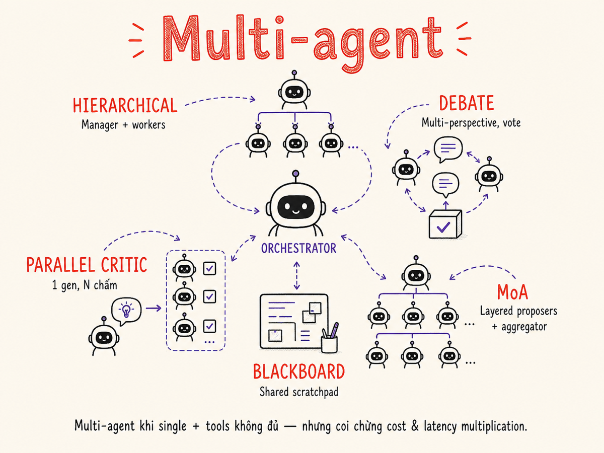

Multi-agent Orchestration (chuyên sâu)
Từ hierarchical manager–worker đến Mixture-of-Agents, debate pattern, và blackboard — hiểu khi nào nhiều agent thực sự tốt hơn một agent mạnh, và cái giá phải trả về cost/latency.

28.1 Khi nào Multi-agent thực sự tốt hơn Single Agent + Tools?
Câu hỏi đầu tiên — và thường bị bỏ qua — là: có cần nhiều agent không? Một agent đơn với đủ tools, context dài, và prompt tốt thường đơn giản hơn nhiều và ít bug hơn. Multi-agent chỉ mang lại lợi ích thực sự trong một số điều kiện cụ thể.
Điều kiện để multi-agent thực sự có lợi
Có lợi khi dùng Multi-agent
- Parallelism thực sự: Các sub-task độc lập nhau, có thể chạy đồng thời (giảm wall-clock time)
- Context window overflow: Task lớn hơn context của một model (long codebase, nhiều documents)
- Specialization rõ ràng: Sub-task cần prompt/model khác nhau (researcher vs. writer vs. validator)
- Fault isolation: Một agent fail không ảnh hưởng toàn bộ pipeline
- Quality via redundancy: Chạy N agents rồi vote/debate tăng accuracy cho high-stakes output
- Scalable workload: Xử lý hàng trăm items song song
Không cần Multi-agent khi
- Task sequential: Mỗi bước phụ thuộc output của bước trước → parallelism = 0
- Context đủ: Toàn bộ information fit trong một context window
- Cost constraints: N agents = N× cost — không có budget
- Latency critical: Orchestration overhead (serialization, routing) làm chậm thêm
- Simple task: Prompt chaining đơn giản đủ dùng
- Team nhỏ: Complexity của multi-agent system vượt khả năng maintain
Bắt đầu với single agent + tools. Nếu gặp context limit, parallelism bottleneck, hoặc cần specialization rõ ràng — lúc đó mới xem xét multi-agent. "Thêm agent" không phải solution mặc định cho mọi vấn đề về quality.
Real benefit case: Software Development Pipeline
Một ví dụ điển hình thực sự có lợi từ multi-agent: CI/CD code review tự động. Task bao gồm: phân tích security, kiểm tra performance, review business logic, viết test suggestions. Bốn concern này độc lập nhau, có thể chạy song song, và cần expertise/prompt khác nhau. Single agent cố handle cả 4 thường làm tốt nhất 2-3 trong khi bỏ sót 1-2.
28.2 Hierarchical: Manager → Workers; Supervisor Pattern
Pattern phổ biến nhất trong production multi-agent systems. Một Manager (Orchestrator) nhận task cấp cao, decompose thành sub-tasks, delegate cho Worker agents chuyên biệt, rồi synthesize kết quả. Manager không làm việc tay chân — chỉ plan và coordinate.
LangGraph Supervisor Pattern
LangGraph implements supervisor pattern bằng cách dùng một supervisor node là LLM với
tool calls để route đến worker nodes. Supervisor quyết định worker nào cần gọi tiếp theo,
hoặc trả về FINISH khi xong.
# LangGraph Supervisor skeleton (2026 API)
from langgraph.prebuilt import create_react_agent
from langgraph_supervisor import create_supervisor
# Tạo worker agents chuyên biệt
researcher = create_react_agent(
model="claude-opus-4-5",
tools=[web_search, fetch_url],
name="researcher",
prompt="You are a research specialist. Find accurate sources."
)
writer = create_react_agent(
model="claude-sonnet-4-5",
tools=[draft_section, format_doc],
name="writer",
prompt="You are a technical writer. Write clear, structured content."
)
fact_checker = create_react_agent(
model="claude-haiku-4-5",
tools=[verify_claim, cite_source],
name="fact_checker",
prompt="You verify factual claims. Flag anything uncertain."
)
# Tạo supervisor orchestrating workers
workflow = create_supervisor(
agents=[researcher, writer, fact_checker],
model="claude-opus-4-5",
prompt="""You coordinate research and writing tasks.
Use researcher first, then writer, then fact_checker.
Return FINISH when the document is complete and verified."""
)
app = workflow.compile()
result = await app.ainvoke({"messages": [("user", user_task)]})
Supervisor: LLM-driven dynamic routing — supervisor quyết định gọi worker nào và khi nào.
Flexible nhưng non-deterministic.
Orchestrator: Code-driven fixed graph — developer hardcode thứ tự workers.
Predictable và dễ debug hơn. Production systems thường bắt đầu với orchestrator, chuyển sang supervisor khi cần flexibility.
28.3 Debate / Multi-perspective (Du et al. — LLM Debate Improves Factuality)
Nghiên cứu của Du et al. (2023) — "Improving Factuality and Reasoning in Language Models through Multiagent Debate" — cho thấy khi nhiều LLM instances debate với nhau qua nhiều vòng, factual accuracy và reasoning quality tăng đáng kể so với single-model chain-of-thought. Mechanism: mỗi agent được expose với lập luận của agent khác → buộc phải refine hoặc defend.
Khi nào dùng Debate Pattern
- High-stakes factual questions: Medical advice, legal analysis, financial projections
- Ambiguous tasks: Nhiều cách interpret task — debate helps surface interpretations
- Creative tasks cần diversity: Brainstorming, ideation — nhiều perspectives = nhiều ideas
- Bias reduction: Single agent có thể có positional bias (hay ưu tiên answer đầu tiên của nó)
Chi phí thực tế: N agents × R rounds = N×R LLM calls + context phình to (mỗi round thêm tất cả answers trước). 2 agents × 2 rounds = ít nhất 4× cost, thường hơn vì context accumulation.
28.4 Parallel Critic: Generator + Multiple Critics → Vote/Select
Pattern này tách biệt generation và evaluation. Một Generator tạo output; nhiều Critics đánh giá từ các góc độ khác nhau; một Aggregator tổng hợp scores và chọn/cải thiện output. Khác với debate ở chỗ: Critics không tranh luận với nhau — chúng độc lập evaluate.
Aggregator có thể hoạt động theo nhiều strategy: weighted average (từng critic có trọng số khác nhau), gate-based (bất kỳ critic nào fail → regenerate), hoặc selective improvement (chỉ gửi feedback từ low-score critics về Generator để tái tạo).
# Parallel critic skeleton
import asyncio
async def parallel_critic_loop(task: str, max_iterations: int = 3) -> str:
for iteration in range(max_iterations):
# 1. Generate candidate
candidate = await generator_agent.run(task)
# 2. Run all critics in parallel
scores = await asyncio.gather(
accuracy_critic.score(candidate),
clarity_critic.score(candidate),
safety_critic.score(candidate),
completeness_critic.score(candidate),
)
# 3. Aggregate and decide
result = aggregator.evaluate(scores)
if result.passed:
return candidate.output
# 4. Add failed-critic feedback to task context
task = task + f"\n\nPrevious attempt issues:\n{result.feedback}"
return candidate.output # return best attempt after max iterations
28.5 Mixture-of-Agents (MoA): Layered Proposers với Aggregator
Mixture-of-Agents (Together AI, Wang et al. 2024) là architecture lấy cảm hứng từ Mixture-of-Experts nhưng áp dụng ở cấp agent thay vì cấp neural network. Key insight: LLMs có collaborativeness — quality của output cải thiện khi model được cung cấp responses của các models khác. MoA exploit điều này bằng cách stack nhiều "layers" của proposer agents.
Theo paper của Together AI, MoA với top-4 models (GPT-4o, Claude 3 Opus, Gemini 1.5, WizardLM-8x22B) đạt 65.1% win rate trên AlpacaEval 2.0, vượt GPT-4o standalone (57.5%). Key finding: thậm chí "weak" proposers cũng cải thiện kết quả khi output của chúng được dùng làm context cho aggregator — vì chúng bổ sung diversity, không cần accuracy hoàn hảo.
MoA với 2 layers × 4 proposers + 1 aggregator = ít nhất 9 LLM calls, và context của Layer 2 bằng tổng tất cả Layer-1 outputs. Chi phí có thể gấp 20-50× single call. Hợp lý cho evaluation benchmarks hoặc offline tasks; ít hợp lý cho real-time user-facing features.
28.6 Blackboard Pattern (Shared Scratchpad)
Lấy cảm hứng từ Blackboard architecture của AI cổ điển (HEARSAY-II, 1975). Thay vì agents giao tiếp trực tiếp, tất cả chia sẻ một blackboard — một shared state/document mà bất kỳ agent nào có thể đọc và ghi. Agents "subscribe" vào phần blackboard liên quan đến họ và "post" kết quả của mình.
Điểm mạnh của Blackboard
- Loose coupling: Agents không biết nhau — chỉ biết blackboard schema. Dễ add/remove agent.
- Emergent collaboration: Agents tự react với state thay vì cần explicit orchestration
- Persistent state: Blackboard là audit log tự nhiên — có thể resume sau crash
- Async-friendly: Agents có thể chạy bất kỳ lúc nào có relevant data trên blackboard
Implement với shared document/database
Trong LLM systems, blackboard thường được implement bằng: shared dict/JSON trong memory
(single process), Redis key-value store (distributed), hoặc database document
(persistent). LangGraph's State object là một dạng in-process blackboard.
28.7 Market-based / Bidding (ít phổ biến nhưng tồn tại)
Pattern lấy cảm hứng từ kinh tế học: agents "bid" cho tasks dựa trên khả năng và workload của mình. Một Auctioneer giao task cho agent có bid tốt nhất (theo criteria: cost, confidence, latency). Phổ biến trong distributed AI research nhưng hiếm trong production LLM systems vì complexity cao.
Use case hợp lý nhất cho Market-based
- Resource allocation: Nhiều tasks queue, nhiều agent instances với capacity khác nhau
- Heterogeneous agents: Agents thực sự có khả năng khác nhau và biết điểm mạnh của mình
- Dynamic scaling: Số agent thay đổi theo load — bid mechanism tự cân bằng workload
Trong practice 2026, market-based agent thường được simplify thành priority queue + load balancer với confidence scoring từ agents — không dùng full auction protocol.
28.8 Agent Communication: Shared Memory vs Message Passing; Structured Channels
Hai paradigm chính
Shared Memory
Agents đọc/ghi vào một state chung. Không có explicit messages.
- Pro: Đơn giản, không cần serialize messages
- Pro: Agents thấy toàn bộ context
- Con: Race conditions khi nhiều agents write đồng thời
- Con: Khó scale sang distributed systems
- Implements: Python dict, LangGraph State, Redis
Message Passing
Agents giao tiếp qua explicit messages / channels. Không shared state.
- Pro: Loose coupling, dễ distribute
- Pro: Clear audit trail — mọi communication là message
- Con: Phải serialize/deserialize, schema management
- Con: Agent cần biết channel names/topics
- Implements: RabbitMQ, Kafka, AutoGen MessageProtocol
Structured Channels — Best Practice 2026
Production systems xu hướng dùng structured, typed channels thay vì free-form text messages: mỗi message có schema rõ ràng (Pydantic model), loại message được enumerate, và agents chỉ accept messages của loại nhất định. Điều này giảm mạnh lỗi "agent hiểu sai message".
# Structured agent communication với Pydantic
from pydantic import BaseModel
from enum import Enum
from typing import Literal, Union
import uuid
class MessageType(Enum):
TASK_ASSIGNMENT = "task_assignment"
TASK_RESULT = "task_result"
CLARIFICATION = "clarification"
ERROR = "error"
TERMINATE = "terminate"
class AgentMessage(BaseModel):
id: str = Field(default_factory=lambda: str(uuid.uuid4()))
type: MessageType
sender_id: str
receiver_id: str
payload: dict # typed per MessageType
timestamp: float
trace_id: str # cho observability — link toàn bộ conversation
# Worker agent chỉ accept TASK_ASSIGNMENT
class ResearchWorker:
async def handle_message(self, msg: AgentMessage) -> AgentMessage:
if msg.type != MessageType.TASK_ASSIGNMENT:
raise ValueError(f"Unexpected message type: {msg.type}")
result = await self.do_research(msg.payload["task"])
return AgentMessage(
type=MessageType.TASK_RESULT,
sender_id=self.agent_id,
receiver_id=msg.sender_id,
payload={"result": result, "confidence": 0.87},
timestamp=time.time(),
trace_id=msg.trace_id # preserve trace
)
28.9 Conflict Resolution, Deadlock Prevention, Termination Conditions
Conflict Resolution
Xảy ra khi hai agents đưa ra output mâu thuẫn. Chiến lược:
- Priority-based: Agent với role cao hơn wins (e.g., safety critic always overrides writer)
- Voting: Majority của N agents wins — cần odd N để tránh tie
- Confidence-weighted: Agent có confidence score cao hơn wins — cần agents tự report confidence calibrated
- Human escalation: Khi conflict score vượt threshold — route to human
- Tiebreaker LLM: Một "judge" LLM được cung cấp cả hai outputs và quyết định
Deadlock Prevention
Deadlock xảy ra khi Agent A chờ Agent B, và Agent B chờ Agent A. Trong LLM systems, thường là circular dependency trong task graph.
- Timeout mỗi agent: Mỗi agent call có timeout riêng, không chờ vô hạn
- Dependency validation: Validate DAG trước khi chạy — từ chối circular dependencies
- Max iterations: Supervisor có counter — dừng sau N vòng bất kể kết quả
- Heartbeat monitoring: Nếu agent không respond trong T seconds → kill và retry hoặc skip
Termination Conditions — Quan trọng nhất
Agent loop không có điều kiện dừng rõ ràng sẽ chạy vô tận (hoặc đến khi hết budget/rate limit). Mỗi multi-agent system PHẢI có: explicit success condition, max_iterations, max_cost budget, và timeout tổng.
# Termination conditions đầy đủ
class OrchestratorConfig(BaseModel):
max_iterations: int = 10 # không chạy quá N vòng
max_total_cost: float = 2.00 # USD — dừng khi vượt budget
timeout_seconds: int = 120 # wall-clock timeout
success_condition: str = "task_complete" # sentinel value
async def run_with_guardrails(task, config: OrchestratorConfig):
start = time.time()
total_cost = 0.0
iteration = 0
while True:
# Termination checks — run BEFORE each iteration
if iteration >= config.max_iterations:
return PartialResult("max_iterations_reached")
if total_cost >= config.max_total_cost:
return PartialResult("budget_exceeded")
if time.time() - start >= config.timeout_seconds:
return PartialResult("timeout")
result, cost = await run_iteration(task)
total_cost += cost
iteration += 1
if result.status == config.success_condition:
return result # happy path
28.10 Cost & Latency Multiplication — Multi-agent = N× Cost dễ dàng
Đây là thực tế cần hiểu rõ trước khi adopt multi-agent. Cost và latency không cộng tuyến tính — chúng nhân lên do context accumulation, coordination overhead, và retry logic.
| Architecture | LLM Calls | Relative Cost | Latency | Khi nào justify |
|---|---|---|---|---|
| Single LLM call | 1 | 1× | ~2–5s | Simple, self-contained task |
| Prompt chaining (3 steps) | 3 | 3× | ~6–15s | Complex task, sequential decompose |
| Parallelization (4 workers) | 4+1 | 5× | ~3–8s (parallel) | Independent sub-tasks, throughput matters |
| Hierarchical (1 mgr + 4 workers) | 5–8 | 6–10× | ~15–40s | Complex task needing specialization |
| Debate (3 agents × 2 rounds) | 6+1 | 8–15× | ~20–60s | High-stakes factual output only |
| MoA (4 proposers × 2 layers + agg) | 9–12 | 15–40× | ~30–90s | Benchmark/offline, accuracy critical |
| Parallel critic (1 gen + 4 critics) | 5–15 (loops) | 5–20× | ~10–50s | Quality threshold required, can retry |
Context Accumulation — Hidden Cost
Ngoài số LLM calls, cost còn tăng do context window phình to: mỗi agent trong debate/MoA phải nhận toàn bộ outputs của agents trước. Ví dụ: MoA Layer 2 với 4 Layer-1 outputs × 500 tokens/output = 2000 tokens thêm vào context của mỗi Layer-2 agent. Với model charge theo input tokens, điều này cộng thêm nhanh.
Cheap workers: Dùng smaller model (Haiku, Flash) cho workers chuyên biệt; chỉ dùng Opus/GPT-4 cho orchestrator và final synthesis. Context compression: Summarize worker outputs trước khi pass vào context của orchestrator. Early termination: Stop khi có kết quả đủ tốt — không cần chạy hết N iterations.
28.11 Frameworks 2026: AutoGen 0.4, CrewAI, LangGraph Multi-agent, Magentic-One, Swarm
| Framework | Paradigm | Strengths | Weaknesses | Best for |
|---|---|---|---|---|
| AutoGen 0.4 Microsoft |
Conversational agents — agents giao tiếp qua dialogue | Flexible conversation topology; strong async support; AgentChat API đơn giản hơn 0.2 | Conversation-first có thể overhead với task-based flows; community docs chưa hoàn thiện | Research, code generation, debate patterns |
| CrewAI OSS |
Role-based crews — define agents as roles với backstory và goals | Intuitive role definition; built-in memory (short/long); Process support (sequential/hierarchical) | Abstraction leaky khi cần fine-grained control; performance overhead | Business workflows, content creation, non-technical teams |
| LangGraph Multi-agent LangChain |
Graph-based stateful workflows — nodes là agents, edges là transitions | Fine-grained state control; human-in-the-loop built-in; excellent observability via LangSmith; production-ready | Verbose graph definition; learning curve; tied to LangChain ecosystem | Production systems needing reliability, audit, complex state |
| Magentic-One Microsoft Research |
Generalist multi-agent system — orchestrator + specialist agents (WebSurfer, FileSurfer, Coder, ComputerTerminal) | Out-of-the-box computer use; good benchmark results; modular specialists | Heavy infra requirements; không phải production-ready off-shelf; cost cao | Computer use, web automation, research tasks |
| Swarm OpenAI (experimental) |
Lightweight handoffs — agents chuyển control qua function calls | Cực kỳ đơn giản; không có framework overhead; dễ understand; tốt để học | Experimental — không production-ready; thiếu persistence, observability, error handling | Learning, prototyping, simple handoff patterns |
Lựa chọn framework 2026
- Production với complex state & observability cần: LangGraph
- Business workflows với non-technical stakeholders: CrewAI
- Research & conversational patterns: AutoGen 0.4
- Computer use / web automation: Magentic-One hoặc Claude computer-use API trực tiếp
- Học multi-agent concepts: Swarm (đọc code — dưới 1000 lines)
- Maximum control, minimum magic: Build custom với asyncio + Pydantic messages
28.12 Anti-patterns: Too Many Agents, Unclear Boundaries, No Termination
Anti-pattern 1: Agent Proliferation
"Thêm agent = thêm quality" — sai. Nhiều agent nhỏ với overlapping responsibilities tạo ra token waste (mỗi agent cần full context), coordination overhead tăng theo quadratic, và emergent behavior khó predict. Rule of thumb: bắt đầu với 2–3 agents, chỉ add khi có clear specialization.
Anti-pattern 2: Unclear Agent Boundaries
Khi hai agents có thể handle cùng một task — system non-deterministic và expensive. Mỗi agent phải có một responsibility rõ ràng, không overlap: "Agent X handles A và KHÔNG handle B." Viết system prompt cho agent bao gồm cả điều agent không được làm.
Anti-pattern 3: No Termination Condition
Đã cover ở 28.9 nhưng nhắc lại: đây là lỗi dẫn đến production incidents thực sự. Một agent loop chạy 200 iterations × $0.01/call = $2 cho 1 request. Scale lên 1000 concurrent users = $2000 trong vài phút.
Anti-pattern 4: Agents Passing Full Context Mỗi Hop
Orchestrator forward toàn bộ conversation history cho mỗi worker → context phình to. Worker thường chỉ cần: task description + relevant subset of state. Implement context distillation layer giữa orchestrator và workers.
Anti-pattern 5: Dùng Multi-agent cho Task Sequential
Nếu Worker B luôn cần output của Worker A, không có parallelism. Đây là prompt chaining, không cần agent framework — overhead không mang lại benefit.
Anti-pattern 6: No Observability
Multi-agent system không có trace/span logging là black box. Khi fail (và sẽ fail), không biết agent nào fail, step nào, với input gì. Minimum: log mỗi agent call với timestamp, input hash, output hash, cost.
Trước khi deploy multi-agent system, hỏi: "Nếu single agent mạnh nhất có thể handle task này trong context window, tại sao tôi cần nhiều agents?" Nếu không có câu trả lời rõ ràng (parallelism, specialization, context limit, quality via redundancy) — dùng single agent.
28.13 "Cách cũ" vs "Cách hiện tại" — Single Monolith vs Specialized Agents
Single Agent, Monolithic Prompt
Approach phổ biến thời kỳ đầu LLM: nhét mọi thứ vào một mega-prompt. System prompt dài 5000+ tokens mô tả tất cả capabilities. Agent cố handle research, writing, fact-checking, formatting trong một loop.
# Cách cũ — one agent cố làm tất cả
system_prompt = """You are an AI assistant. You can:
- Search the web for information
- Analyze data and draw conclusions
- Write professional reports
- Check facts and cite sources
- Format documents in multiple styles
- Translate between languages
- Review and critique content
... (500 more lines of instructions)
"""
# Mọi task đều dùng same agent
response = agent.run(
system=system_prompt,
task="Research competitors and write a 10-page report"
)Vấn đề:
- Context window bị chiếm bởi instructions không liên quan đến task hiện tại
- Agent "attention" bị diluted — không focus vào sub-task hiện tại
- Khó test: change instruction A có thể break behavior B
- Không có parallelism — mọi thứ sequential
- Debugging khó: không biết agent đang "suy nghĩ" gì tại mỗi step
Specialized Agents với Clear Handoff Protocols
2024–2026: Decompose thành agents chuyên biệt, mỗi agent có: focused system prompt, relevant tools only, clear input/output contract, và explicit handoff conditions.
# Cách hiện tại — specialized agents, clear contracts
researcher = Agent(
model="claude-haiku-4-5", # cheap for fast lookups
system="""You are a researcher. Your ONLY job is to find
accurate information from given sources. You do NOT
write reports, analyze data, or format documents.
Output: structured JSON with sources + confidence.""",
tools=[web_search, fetch_url]
)
analyst = Agent(
model="claude-sonnet-4-5",
system="""You are a data analyst. Your ONLY job is to
analyze structured research data and draw insights.
You do NOT search the web or write final reports.
Output: JSON with insights + supporting evidence.""",
tools=[run_python, query_db]
)
writer = Agent(
model="claude-opus-4-5", # best model for final output
system="""You are a professional writer. Your ONLY job
is to write clear, structured reports from provided
research and analysis. You do NOT search or analyze.
Output: formatted markdown report.""",
tools=[format_doc, check_style]
)
# Orchestrator with explicit handoff protocol
async def research_pipeline(task: str) -> str:
# Step 1: Parallel research
research_results = await asyncio.gather(
researcher.run(f"Research: {task} — competitor landscape"),
researcher.run(f"Research: {task} — market data"),
researcher.run(f"Research: {task} — recent news"),
)
# Step 2: Analyze (depends on research)
analysis = await analyst.run({
"task": task,
"research": research_results # only relevant data
})
# Step 3: Write (depends on analysis)
return await writer.run({
"task": task,
"analysis": analysis # distilled, not raw research
})Ví dụ: Code Review Automation
Cách cũ
- 1 agent với prompt mô tả tất cả: security, performance, style, logic
- Agent review lần lượt từng concern trong 1 context
- Kết quả: review chung chung, miss security issues khi context lớn
- Cost: 1 × large model call
- Latency: 15–30s
Cách hiện tại
- 4 agents chạy parallel: security specialist, perf analyst, style checker, logic reviewer
- Mỗi agent có focused prompt + relevant tools (SAST, profiler, AST)
- Kết quả: sâu hơn trong từng domain, ít false negatives
- Cost: 4 × small model calls (Haiku) ≈ tương đương
- Latency: 5–8s (parallel)
Bảng so sánh tổng hợp: Khi nào dùng pattern nào
| Pattern | Use case cốt lõi | Cost | Latency | Complexity | Quality gain |
|---|---|---|---|---|---|
| Single agent + tools | Self-contained tasks, context đủ | 1× | Thấp | Thấp | Baseline |
| Hierarchical / Supervisor | Complex tasks cần specialization; task decomposition rõ | 5–10× | Medium | Medium | Cao nếu workers thực sự specialized |
| Debate | High-stakes factual output; bias reduction | 8–20× | Cao | Medium | Factuality +10–15% (Du et al.) |
| Parallel Critic | Quality threshold, multi-dimension evaluation | 5–15× | Medium (parallel critics) | Medium | Cao khi criteria rõ ràng |
| MoA | Maximum quality, offline/batch, benchmark | 15–50× | Rất cao | Cao | SoTA trên nhiều benchmarks |
| Blackboard | Emergent collaboration; loosely coupled agents; async | Variable | Variable | Cao (infra) | Linh hoạt nhất |
| Market-based | Distributed agents; dynamic load balancing | Variable | Variable | Rất cao | Tốt cho scale, không cho quality |
Tóm tắt
- Multi-agent chỉ tốt hơn single agent khi: có parallelism thực sự, context limit bị overflow, specialization rõ ràng, hoặc quality cần redundancy. Đây không phải default choice.
- Hierarchical (Manager → Workers) là pattern production phổ biến nhất. LangGraph supervisor + specialized workers là combination tốt nhất 2026 cho production.
- Debate (Du et al.) cải thiện factuality nhưng cost N×R lần. Dùng cho high-stakes output, không dùng cho real-time features.
- Parallel Critic tốt cho quality-gated generation: tách biệt generation và evaluation, critics chạy song song.
- MoA cho quality cao nhất nhưng cost rất cao (15–50×). Hợp lý cho offline, batch, hoặc benchmark — không phải user-facing real-time.
- Blackboard tốt cho loose coupling và emergent collaboration. Implement bằng shared state (LangGraph, Redis).
- Agent communication: prefer typed, structured messages với Pydantic schemas. Include trace_id mọi lúc cho observability.
- Termination conditions PHẢI có: max_iterations, max_cost, timeout, success_condition. Thiếu một trong bốn = production incident sắp xảy ra.
- Cost thực tế: multi-agent = N× calls × context accumulation. Optimize bằng cách dùng cheap models cho workers, compress context trước handoff.
- Cách hiện tại: Specialized agents với focused system prompt + clear handoff protocols + typed messages, thay cho một monolithic agent cố handle tất cả.
- Frameworks 2026: LangGraph (production), CrewAI (business workflows), AutoGen 0.4 (research/conversational), Magentic-One (computer use), Swarm (learning/prototyping).
- Anti-patterns cần tránh: agent proliferation, unclear boundaries, no termination, full context per hop, dùng multi-agent cho sequential tasks, không có observability.